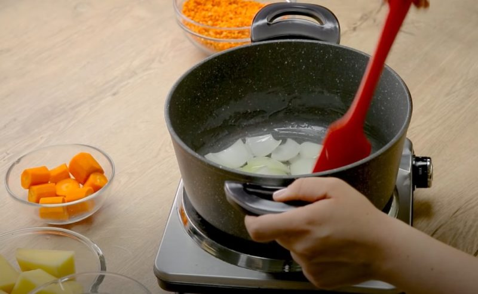
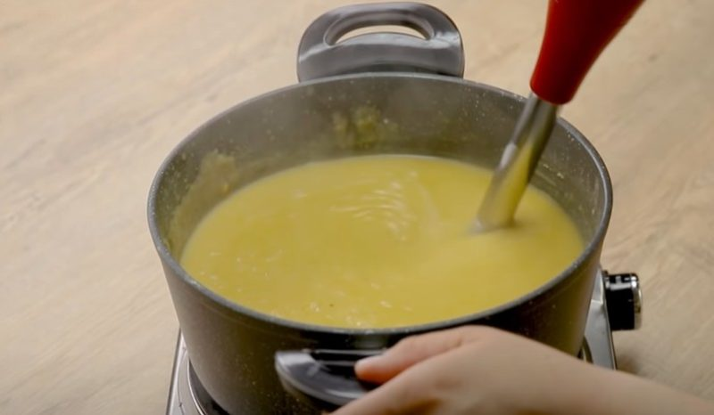

Для многих из нас чечевица, столь привычная в странах Азии, продолжает оставаться непривычным деликатесом. А турецкий чечевичный суп кажется доступным только при поездке за рубеж. Уже тысячелетия семена этого зернобобового растения используются людьми в пищу. Чему служит доказательством его упоминание в такой священной книге, как Библия. Сегодня чечевицу можно купить и у нас. Для многих стран чечевица остается одной их главных возделываемых сельскохозяйственных культур. В еду употребляются, главным образом, семена растения, служащие источником белка. Их готовят цельными или перемолотыми в муку. А чечевичный суп по турецки сытен, питателен и очень вкусен.
Большая часть турецкой еды имеет давние традиции – столетия, если не больше. Спустя тысячелетия суп из чечевицы остается одним из основных блюд на большей части Ближнего Востока. И конечно, в Турции, где я живу. Редко найдется ресторан, в меню которого не было бы тарелки чечевичного супа. Турецкая версия супа обычно довольно простая. Его редко едят в качестве основного блюда. Скорее, он подается как небольшая закуска, чтобы согреть вас перед погружением в основное блюдо, будь то обед или ужин. Удобно, что в большинстве ресторанов и кафе вам спокойно подадут половину порции супа – независимо от того, указано ли это в меню или нет. Суп также играет важную роль во время поста месяца Рамадан — ифтар часто начинается с миски чечевичного супа (mercimek çorbası). Мерджимек чорбасы — достаточно густое, пюреобразной консистенции блюдо. Готовится оно из красной чечевицы. Ниже я расскажу традиционный рецепт турецкого супа из чечевицы мерджимек чорбасы. Используйте воду, чтобы суп получился более нежным и с выраженным вкусом чечевицы. Также такой суп проще приготовить. Идеально подходит для ужина в будний день.
1-1,5 литра кипятка (смотрите по густоте супа), либо куриного бульона; 3 столовые ложки оливкового (подсолнечного) масла; один стакан красной чечевицы (250 грамм); одна средняя морковь; один средний картофель; одна средняя луковица, один помидор, 3-4 зубчика чеснока, столовая ложка томатной пасты, столовая ложка сливочного масла, зелень, лимон (для поливки супа при подаче, по вкусу), специи: соль, острый перец красный (если любите, я обычно не добавляю), черный перец, тимьян, сухая перечная мята.
Важно! В отличие от многих других бобовых, чечевицу не нужно замачивать перед приготовлением. Красная чечевица варится примерно от 20 до 30 минут, и вам не нужно замачивать их.
Нарезать овощи и чеснок.
Налить в кастрюлю растительное масло (подсолнечное, оливковое). Положить нарезанный лук, морковь, картофель и чеснок. Жарить под крышкой минут 5.
 Добавляем нарезанный помидор и обжариваем еще пару минут. Затем отправляем в кастрюлю чечевицу и томатную пасту, помешиваем и обжариваем две минуты.Заливаем кипяток и варим 20-30 минут на медленном огне до готовности.
Добавить 1/2 ч.л. тимьяна, 1 ч.л. мяты. Измельчить блендером до однородной массы.

Растопите 3 ст. ложки сливочного масла в сковороде. Добавьте 1 чайную ложку измельченного красного перца и обжарьте в течение 2 минут.

Налить суп в тарелку, сверху полить по желанию маслом с перцем. В тарелку выдавить сок из дольки лимона.